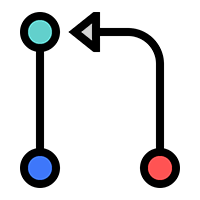

Git Pull
O Pull Request é uma maneira de informar a todos que você irá executar a implementação do seu código ao Repositório principal. Dessa forma os colaboradores podem abrir e revisar a Pull Request e decidir se aceitam ou não as mudanças. O comando utilizado é:
$ git pull
Quando você realiza um pull, o Git vai buscar as alterações de código dos outros desenvolvedores e tentar fazer o merge daquelas alterações no seu código. Caso o Git não consiga fazer o merge automático ele marcará as seções do código onde há conflito e você precisará juntar os códigos manualmente, indicando se vai utilizar as alterações que vieram da origem, as suas alterações locais, ambas ou até mesmo mesclar as duas. Uma vez que terminar de realizar o merge, faça um git add e depois um commit para salvar essas alterações.
Fonte: